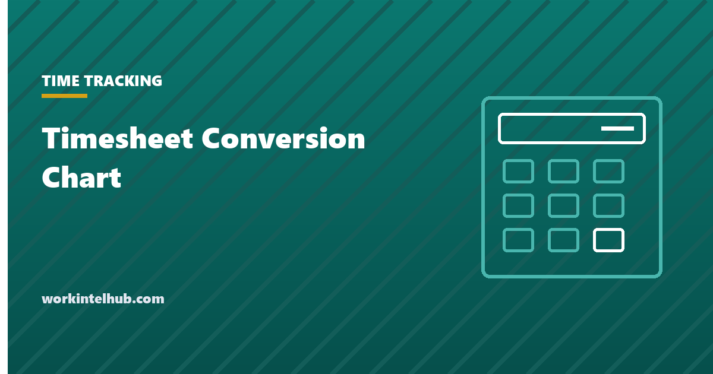

Timesheet Conversion Chart

Payroll runs on decimal hours. Clocks record minutes. The chart below converts every minute from 1 to 59, and adds the two rounded columns most payroll systems use.
The conversion itself is minutes divided by 60. It is worth having the table anyway, because the error people make is not arithmetic. It is reading 20 minutes as 0.20 instead of 0.33, which looks right and is wrong by seven minutes every time.
Minutes to decimal hours
Exact is minutes divided by 60, to two places. Nearest tenth and nearest quarter are the two rounding conventions 29 CFR 785.48 recognises, shown so you can see what each one does to a given minute before you adopt it.
| Minutes | Exact | Nearest tenth | Nearest quarter |
|---|---|---|---|
| 1 | 0.02 | 0.00 | 0.00 |
| 2 | 0.03 | 0.00 | 0.00 |
| 3 | 0.05 | 0.00 | 0.00 |
| 4 | 0.07 | 0.10 | 0.00 |
| 5 | 0.08 | 0.10 | 0.00 |
| 6 | 0.10 | 0.10 | 0.00 |
| 7 | 0.12 | 0.10 | 0.00 |
| 8 | 0.13 | 0.10 | 0.25 |
| 9 | 0.15 | 0.20 | 0.25 |
| 10 | 0.17 | 0.20 | 0.25 |
| 11 | 0.18 | 0.20 | 0.25 |
| 12 | 0.20 | 0.20 | 0.25 |
| 13 | 0.22 | 0.20 | 0.25 |
| 14 | 0.23 | 0.20 | 0.25 |
| 15 | 0.25 | 0.20 | 0.25 |
| 16 | 0.27 | 0.30 | 0.25 |
| 17 | 0.28 | 0.30 | 0.25 |
| 18 | 0.30 | 0.30 | 0.25 |
| 19 | 0.32 | 0.30 | 0.25 |
| 20 | 0.33 | 0.30 | 0.25 |
| 21 | 0.35 | 0.40 | 0.25 |
| 22 | 0.37 | 0.40 | 0.25 |
| 23 | 0.38 | 0.40 | 0.50 |
| 24 | 0.40 | 0.40 | 0.50 |
| 25 | 0.42 | 0.40 | 0.50 |
| 26 | 0.43 | 0.40 | 0.50 |
| 27 | 0.45 | 0.40 | 0.50 |
| 28 | 0.47 | 0.50 | 0.50 |
| 29 | 0.48 | 0.50 | 0.50 |
| 30 | 0.50 | 0.50 | 0.50 |
| 31 | 0.52 | 0.50 | 0.50 |
| 32 | 0.53 | 0.50 | 0.50 |
| 33 | 0.55 | 0.60 | 0.50 |
| 34 | 0.57 | 0.60 | 0.50 |
| 35 | 0.58 | 0.60 | 0.50 |
| 36 | 0.60 | 0.60 | 0.50 |
| 37 | 0.62 | 0.60 | 0.50 |
| 38 | 0.63 | 0.60 | 0.75 |
| 39 | 0.65 | 0.60 | 0.75 |
| 40 | 0.67 | 0.70 | 0.75 |
| 41 | 0.68 | 0.70 | 0.75 |
| 42 | 0.70 | 0.70 | 0.75 |
| 43 | 0.72 | 0.70 | 0.75 |
| 44 | 0.73 | 0.70 | 0.75 |
| 45 | 0.75 | 0.80 | 0.75 |
| 46 | 0.77 | 0.80 | 0.75 |
| 47 | 0.78 | 0.80 | 0.75 |
| 48 | 0.80 | 0.80 | 0.75 |
| 49 | 0.82 | 0.80 | 0.75 |
| 50 | 0.83 | 0.80 | 0.75 |
| 51 | 0.85 | 0.80 | 0.75 |
| 52 | 0.87 | 0.90 | 0.75 |
| 53 | 0.88 | 0.90 | 1.00 |
| 54 | 0.90 | 0.90 | 1.00 |
| 55 | 0.92 | 0.90 | 1.00 |
| 56 | 0.93 | 0.90 | 1.00 |
| 57 | 0.95 | 1.00 | 1.00 |
| 58 | 0.97 | 1.00 | 1.00 |
| 59 | 0.98 | 1.00 | 1.00 |
The ones worth memorising
In practice about eight values cover most of what you will convert.
| Minutes | Decimal | Why it comes up |
|---|---|---|
| 6 | 0.10 | The tenth-of-an-hour unit used in billing |
| 10 | 0.17 | Frequently mis-written as 0.10 |
| 15 | 0.25 | Quarter hour |
| 20 | 0.33 | Frequently mis-written as 0.20 |
| 30 | 0.50 | Half hour |
| 40 | 0.67 | Frequently mis-written as 0.40 |
| 45 | 0.75 | Three quarter hour |
| 50 | 0.83 | Frequently mis-written as 0.50 |
The pattern in the errors is worth noticing. Every one of them treats the minutes as if they were hundredths, and every one of them understates the time. Nobody accidentally converts 20 minutes to 0.45.
Do not convert by hand in a spreadsheet
If your times are in a spreadsheet, the conversion is already done for you. Subtracting one time from another returns a fraction of a day, so multiplying by 24 gives decimal hours directly.
Decimal hours between two times: =(out-in)*24
Crossing midnight: =MOD(out-in,1)*24
Minutes to decimal: =minutes/60
Decimal back to h:mm: =TEXT(hours/24,"h:mm")
Round to nearest tenth: =ROUND(hours*10,0)/10
Round to nearest quarter: =ROUND(hours*4,0)/4
Format the result cell as a number, not as a time. Leaving it formatted as time is why a 7.5 hour day sometimes displays as 07:30 in one column and 7.50 in the next, and why the two get added together.
If you are converting inside a spreadsheet rather than by hand, our Excel and Google Sheets timesheet guide covers the formulas and the formatting trap that makes a correct calculation display as a clock time.
What rounding is actually allowed
The nearest tenth and nearest quarter columns are not arbitrary conventions. 29 CFR 785.48 permits the long-standing practice of recording start and stop times to the nearest 5 minutes, the nearest tenth of an hour, or the nearest quarter hour, provided the practice does not, over a period of time, fail to compensate employees properly for all the time they actually worked.
That proviso does the real work. Rounding has to run both directions, and it has to come out roughly even. A rule that rounds arrivals up to the next quarter and departures down to the last quarter is not rounding, it is a standing deduction of up to 28 minutes a day, and it fails the regulation regardless of how it is described in the handbook.
The rule that gets called the seven minute rule is the arithmetic consequence of quarter hour rounding, not a separate provision. Under quarter hour rounding, minutes 1 to 7 round down and 8 to 14 round up. That is neutral by construction, which is the only reason it is defensible.
Our timesheet template uses exact decimal to two places for this reason. If the arithmetic is being done by a computer, rounding buys nothing and adds a compliance question you do not need.
Key takeaways
- Minutes convert to decimal hours by dividing by 60. Twenty minutes is 0.33, not 0.20.
- Every common conversion error treats minutes as hundredths, and every one of them understates the time worked.
- In a spreadsheet, subtracting two times and multiplying by 24 gives decimal hours with no manual conversion.
- Use MOD for shifts that cross midnight, or the result goes negative.
- 29 CFR 785.48 permits rounding to the nearest 5 minutes, tenth or quarter hour, but only if it comes out even over time.
- The seven minute rule is just what quarter-hour rounding does arithmetically, not a separate legal provision.
- If a computer is doing the arithmetic, do not round at all. Exact decimal removes the compliance question.
Frequently asked questions
How do I convert minutes to decimal hours?
Divide the minutes by 60. Fifteen minutes is 0.25, thirty is 0.50, and forty five is 0.75. The values that catch people out are the ones that do not divide evenly, such as twenty minutes, which is 0.33 rather than 0.20.
What is 20 minutes in decimal hours?
0.33. Twenty divided by sixty is 0.3333, which rounds to 0.33 at two decimal places. Writing it as 0.20 is the most common timesheet conversion error and understates the time by about eight minutes.
What is 45 minutes in decimal hours?
0.75. Forty five is three quarters of sixty, so three quarters of an hour is 0.75. Similarly fifteen minutes is 0.25 and thirty minutes is 0.50.
What is the 7 minute rule for timesheets?
It describes what quarter-hour rounding does: minutes 1 through 7 round down to the previous quarter hour and minutes 8 through 14 round up to the next one. It is not a separate rule in the regulations. 29 CFR 785.48 permits quarter-hour rounding generally, and the seven minute split is simply where the midpoint falls.
Is it legal to round employee time?
Yes, within limits. 29 CFR 785.48 permits recording start and stop times to the nearest 5 minutes, tenth of an hour or quarter hour, provided the practice does not over time fail to compensate employees for all the hours they actually worked. Rounding that only ever favours the employer does not satisfy that condition.
Should I round or use exact decimal hours?
Use exact decimal if a computer is doing the arithmetic. Rounding existed to make punch card totals tractable by hand. A spreadsheet has no such constraint, and exact hours remove any question about whether the rounding was neutral.
Why does my spreadsheet show 7:30 instead of 7.50?
The result cell is formatted as a time rather than a number. Change the cell format to Number with two decimal places. Left as a time format, hour totals silently behave as fractions of a day when you add them, which produces totals that look plausible and are wrong.